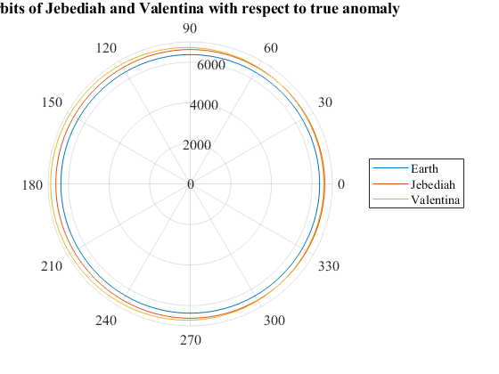

eccentricity = 0.022318107;
a = 6721;
p = a * (1 - eccentricity * eccentricity);
angleStart = 0;
angleStop = 360;
angleSteps = 360;
angles = linspace(angleStart, angleStop, angleSteps);
Earth = zeros(1,360);
Jeb = zeros(1,360);
Val = zeros(1,360);
Rads = zeros(1,360);
for x = 1:angleSteps
Val(x) = (p / ( 1 + eccentricity * cosd(x)) );
Jeb(x) = 250 + 6371;
Earth(x) = 6371;
Rads(x) = angles(x) * (pi / 180);
end
polarplot(Rads,Earth,Rads,Jeb,Rads,Val);
title("Orbits of Jebediah and Valentina with respect to true anomaly");
legend("Earth" , "Jebediah" , "Valentina");
set(gca,'FontName','Times');
set(gca,'FontSize',12);
